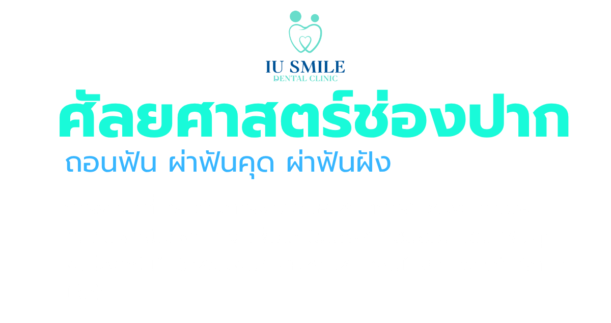
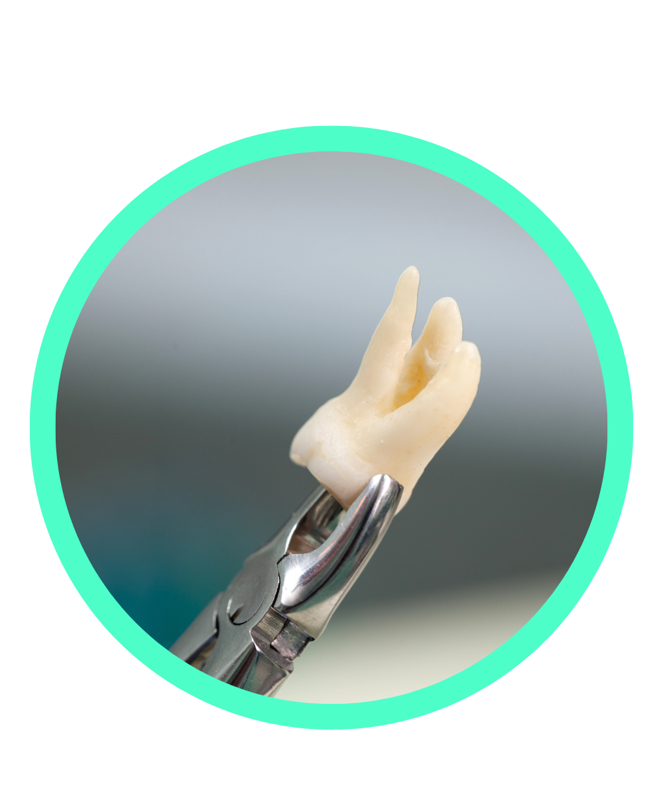
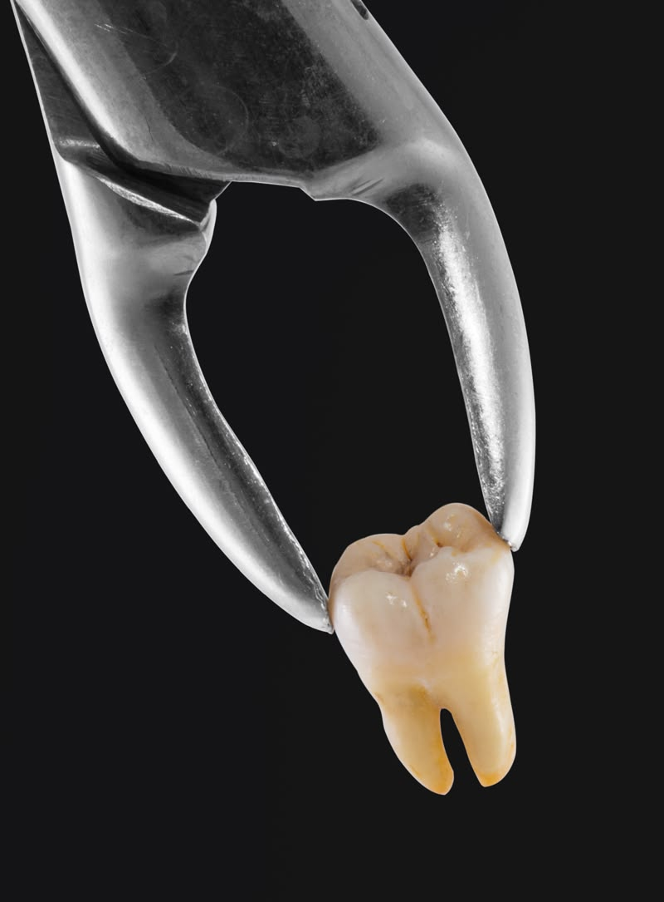
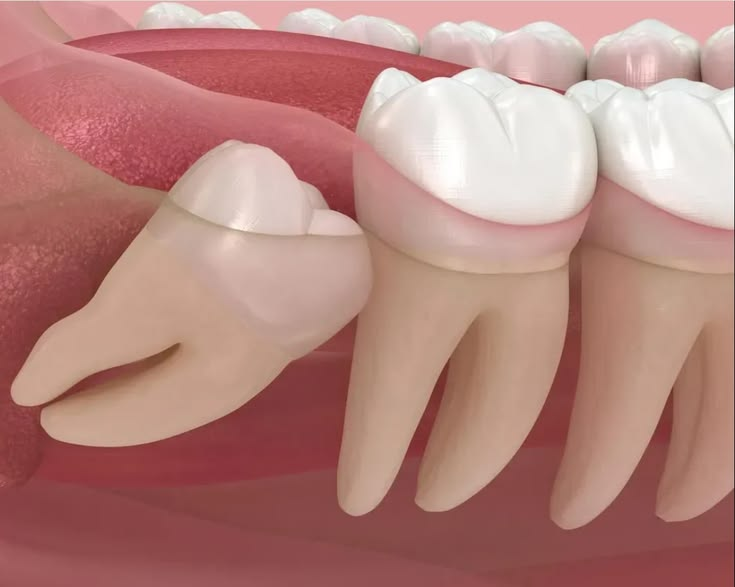
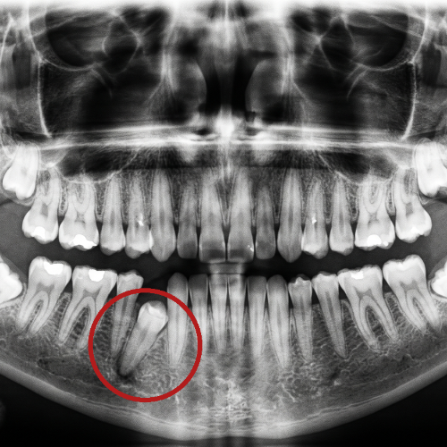
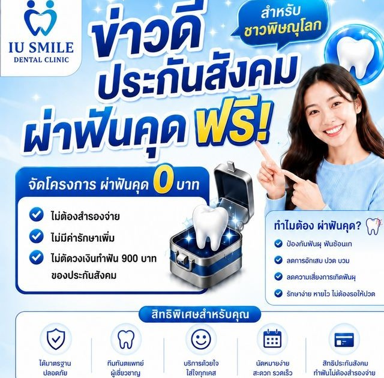

นัดหมายปรึกษา

ฟันผุขนาดใหญ่ที่ลุกลามจนไม่สามารถอุดหรือรักษารากฟันได้, ฟันแตกหักเสียหายลึกถึงรากฟัน, หรือฟันโยกจากโรคปริทันต์รุนแรงที่ไม่สามารถ ยึดเกาะได้ช่วยกำจัดซี่ฟันที่เสียหายหรือติดเชื้อออกเพื่อไม่ให้ลุกลามไปยังซี่อื่น

ทำให้โผล่ขึ้นมาได้บางส่วน เอียง หรือฝังอยู่ใต้เหงือกและกระดูก ช่วยแก้ปัญหาอาการปวด บวม อักเสบซ้ำซาก และป้องกันไม่ให้ฟันคุดไปเบียดดันฟันซี่ข้างเคียงจนฟันเกหรือผุ

ฟันที่จมอยู่ใต้เหงือกหรือกระดูกขากรรไกรทั้งซี่และ ไม่ยอมขึ้นมาตามธรรมชาติช่วยป้องกั การเกิดถุงน้ำหรือซีสต์ในกระดูกขากรรไกร ป้องกันการทำลายรากฟันซี่ข้างเคียง
กัดผ้าก๊อซบริเวณแผลนาน 45-60 นาที ห้ามเปลี่ยนผ้าบ่อยๆ และห้ามบ้วน ห้ามถ่ม น้ำลายแรงๆ ไม่แนะนำใช้หลอดดูดน้ำเพื่อดื่มน้ำ ควรฟันกัดผ้ากอซให้แน่นพอดีและอยู่นิ่งๆ ประมาณ 1-2 ชั่วโมงตามคำแนะนำของทันตแพทย์ โดยให้กลืนน้ำลายและเลือดลงคอตามปกติ ห้ามบ้วนทิ้งเด็ดขาด เพราะแรงจากการบ้วนจะทำให้ลิ่มเลือดหลุดออกและเลือดกลับมาไหลซ้ำได้อีก
หลีกเลี่ยงอาหารร้อนและอาหารรสจัด เพราะจะเป็นการกระตุ้นให้แผลในช่องปากแย่ลงได้ ในช่วง 1-2 วันแรกหลังถอนฟันจึงควรเน้นรับประทานอาหารอ่อน รสจืด และมีอุณหภูมิเย็นหรืออุณหภูมิห้อง เพื่อช่วยให้เลือดแข็งตัวได้ดีและลดอาการบวมบริเวณแผลได้อย่างมีประสิทธิภาพ
ควบคุมอาการปวดและลดบวม: ยาแก้ปวดและยาแก้อักเสบจะช่วยบรรเทาความเจ็บปวดของเนื้อเยื่อที่บาดเจ็บ ทำให้คุณสามารถพักผ่อนและฟื้นตัวได้เร็วขึ้น
ป้องกันแผลติดเชื้อ: หากทันตแพทย์จ่ายยาปฏิชีวนะ (ยาฆ่าเชื้อ) การทานหรือทายาให้ครบตามกำหนดอย่างเคร่งครัดจะช่วยกำจัดเชื้อแบคทีเรียและป้องกันไม่ให้แผลอักเสบลุกลา
ป้องกันการหมักหมมของเศษอาหาร:การแปรงฟันซี่อื่นๆ ให้สะอาดตามปกติจะช่วยลดปริมาณเชื้อโรคโดยรวมในช่องปาก ทำให้สภาพแวดล้อมเอื้อต่อการสร้างเนื้อเยื่อใหม่ หลีกเลี่ยงการแปรงกระแทกโดนแผลโดยตรง จะช่วยปกป้องลิ่มเลือดให้คงอยู่และทำหน้าที่เป็นพลาสเตอร์ธรรมชาติปิดปากแผลต่อไป
แรงดูดจากการสูบบุหรี่จะทำให้ลิ่มเลือดที่ก่อตัวอุดปากแผลหลุดออก นำไปสู่ภาวะกระดูกเบ้าฟันอักเสบซึ่งมีอาการปวดรุนแรงมาก และทำให้แผงหายช้า ส่วน แอลกอฮอล์มีฤทธิ์กระตุ้นการไหลเวียนเลือดและทำให้หลอดเลือดขยายตัว ส่งผลให้เลือดบริเวณแผลหยุดไหลได้ยากหรืออาจกลับมาไหลซึมอีกครั้ง และสามารถทำปฏิกิริยาที่เป็นอันตรายกับยาแก้ปวด ยาแก้อักเสบ หรือยาปฏิชีวนะที่ทันตแพทย์จ่ายให้ ซึ่งอาจทำให้ยาออกฤทธิ์ลดลงหรือส่งผลเสียต่อการทำงานของตับ
สิทธิบัตรทอง

สิทธิประกันสังคม

